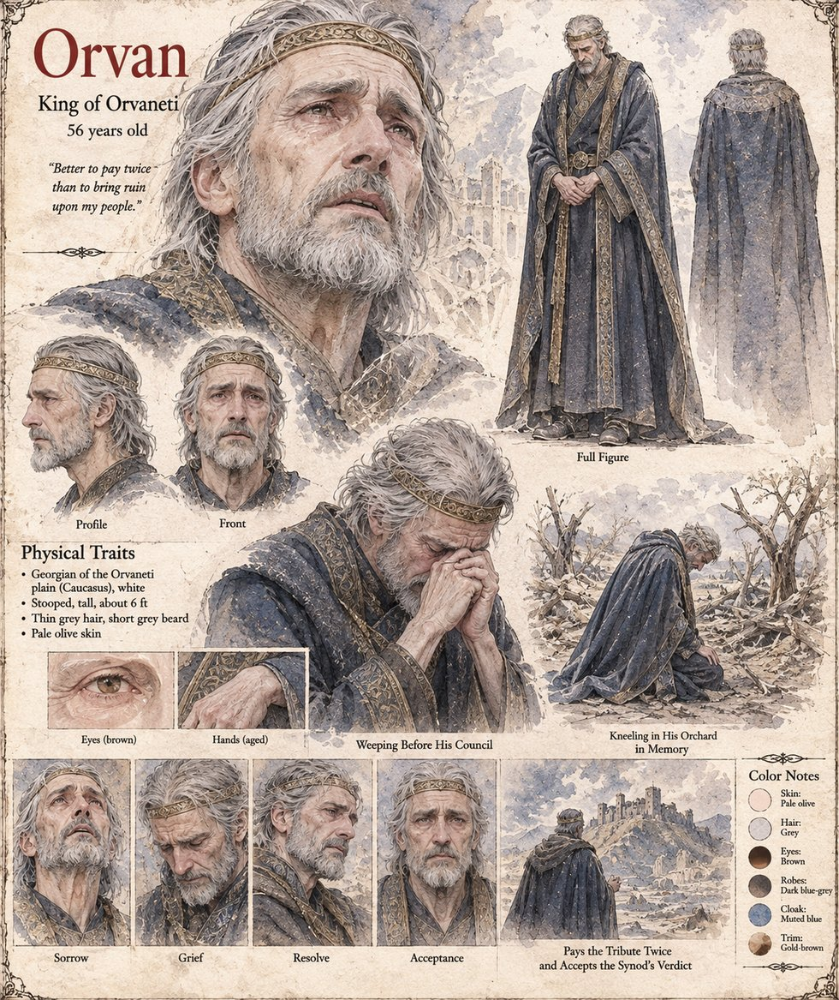

Orvan
King of Orvaneti · husband of Tinatin, father of Mirdat · dies in the twenty-seventh year of the Concordat · 56 on his sheet
A gentle, tired, scrupulous man named Orvan, who loved his people and had never once successfully refused anyone. He reigns at Dzirvali, in a palace of mud-brick and good intentions, over some six hundred thousand souls along the Ladzhura who grow half of what Vashkeni eats; Orvaneti has neither a seat on the Council of the Quiver nor an arrow. His queen, Tinatin, stands among the kitchen children each dawn, and his son Mirdat, eleven in the thirteenth year, holds a small wooden spoon in his fist.
In that year the autumn is the loveliest anyone remembers, golden for twenty-nine days; then the winter barley goes into dry ground, the granaries are a third full by Kerren and the seed-corn is eaten by Mavren, and the queen dies in the first week of Averin. A Synod verdict is read from the temple steps at Samaghvto by Hierarch Gurgen: the lowlands have been found short in their measures, the tribute of timber is late by a season, and their oaths have been kept in the letter and not the spirit. Orvan accepts it. He pays the tribute twice, sends three hundred beams he cannot spare, and weeps before his council for a crime that nobody committed, while his son watches and wonders what the rain had been doing in the meantime.
He dies in the twenty-seventh year of a gentle and general decline, having refused to the last to be a trouble to anyone, and his son is crowned at twenty-four. Mirdat inherits the belief that the Dry Year was a judgment on his father’s people. In the twenty-ninth year, on the night the Elara host marches, a folio from the Hierarch’s hand proves otherwise, and what he thinks of, reading it, is his father paying the tribute twice. When he draws the bow for the Hail, the picture takes up, unchosen, a day in the ninth year of his life, at the end of a summer, when a hailstorm shredded his father’s plums and his father knelt among them in the orchard, weeping.
The manuscript gives his temperament, reign and death and no age, face or build. The sheet’s age of 56, stooped tall build of about 6 ft, thin grey hair and short grey beard, pale olive skin, brown eyes, dark blue-grey robe with gold-brown trim, muted blue cloak and gold circlet are its own, as are its panels Sorrow, Grief, Resolve and Acceptance and its three scenes, Weeping Before His Council, Kneeling in His Orchard in Memory and Pays the Tribute Twice and Accepts the Synod’s Verdict. Its printed line, Better to pay twice than to bring ruin upon my people., is not in the manuscript.
“had never once successfully refused anyone”